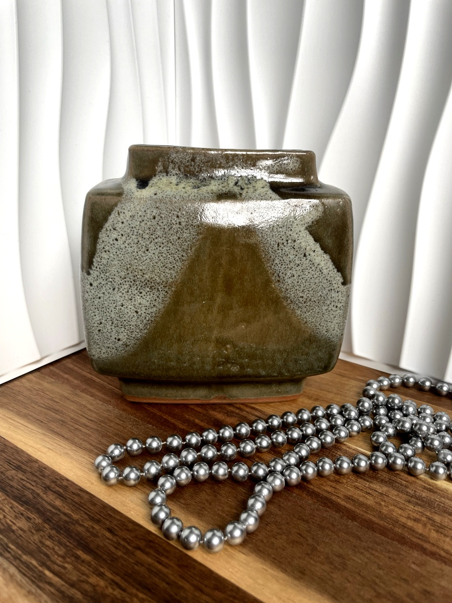
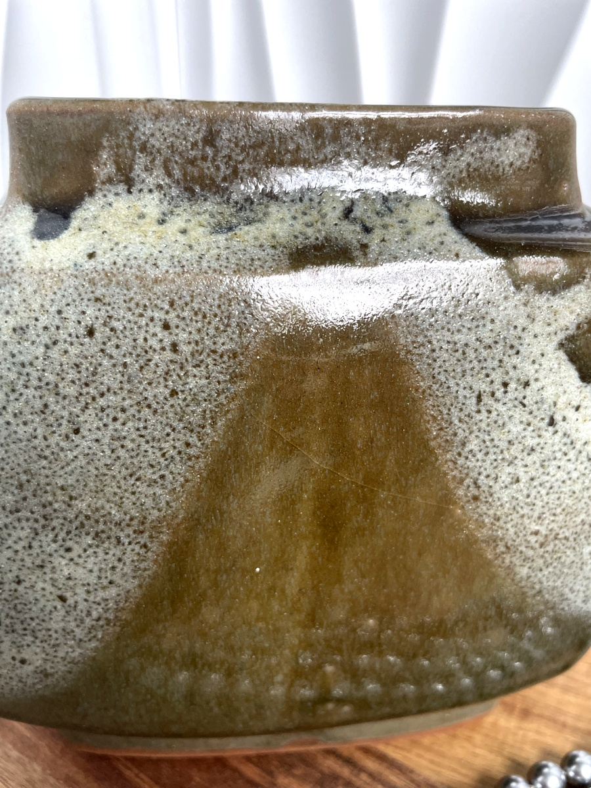
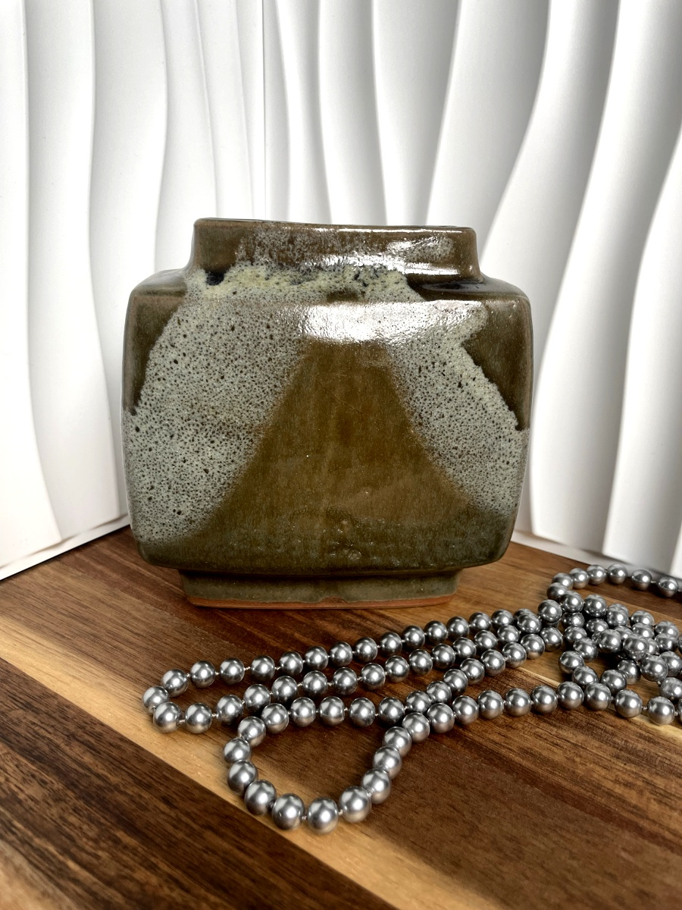
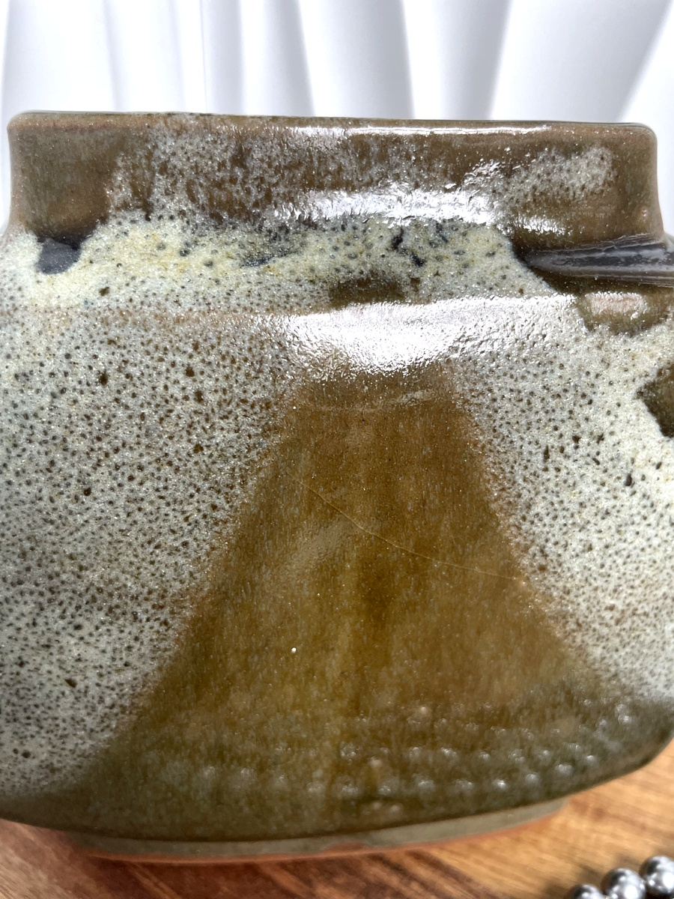

Rare Pierre Culot Citroën Vase
€1200.00
This extraordinary vase was created by the celebrated Belgian ceramicist Pierre Culot (1938–2011), internationally recognized for his bold, architectural forms and mastery of clay.
A rare collaboration with Citroën, this piece reflects the meeting of modernist design and timeless craftsmanship. Culot’s works are represented in museum collections and prestigious galleries worldwide, making his ceramics highly sought after by serious collectors.
- Artist: Pierre Culot (1938–2011), Belgian sculptor & ceramicist
- Collaboration: Produced for Citroën — exceptionally rare
- Condition: Outstanding, no chips or cracks. Gentle wear only, fully consistent with age
- Provenance: Authentic piece, museum-quality
This vase represents not only the mastery of a great artist, but also a unique crossover between fine art and design history. A rare opportunity to acquire a perfect-condition Pierre Culot collectible — an investment-worthy piece for any serious collection.